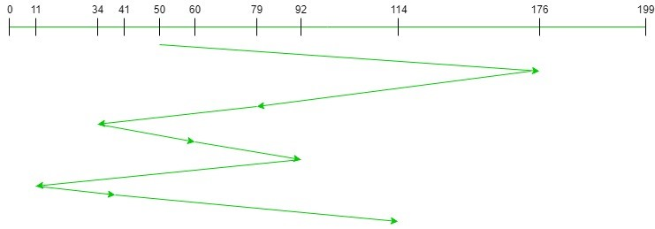

FCFS (First-Come-First-Serve) is the easiest disk scheduling algorithm among all the scheduling algorithms. In the FCFS disk scheduling algorithm, each input/output request is served in the order in which the requests arrive. In this algorithm, starvation does not occur because FCFS address each request.
Advantages:
- First Come First Serve algorithm has a very simple logic, it executes the process requests one by one in the sequence they arrive.
- Thus, First Come First Serve is very simple and easy to understand and implement. Thus, First Come First Serve is very simple and easy to understand and implement.
- In FCFS eventually, each and every process gets a chance to execute, so no starvation occur.
Disadvantages:
- This scheduling algorithm is nonpreemptive, which means the process can’t be stopped in middle of execution and will run it’s full course.
- FCFS being a nonpreemptive scheduling algorithm, the short processes which are at the back of the queue have to wait for the long process at the front to finish
- The throughput of FCFS is not very efficient.
- FCFS is implemented on small systems only where input-output efficiency is not of utmost importance.
Implementation:
- Input the processes along with their burst time (bt).
- Find waiting time (wt) for all processes.
- As first process that comes need not to wait so waiting time for process 1 will be 0 i.e. wt[0] = 0.
- Find waiting time for all other processes i.e. for process i -> wt[i] = bt[i-1] + wt[i-1] .
- Find turnaround time = waiting_time + burst_time for all processes.
- Find average waiting time = total_waiting_time / no_of_processes.
- Similarly, find average turnaround time = total_turn_around_time / no_of_processes.
FCFS is the simplest disk scheduling algorithm. As the name suggests, this algorithm entertains requests in the order they arrive in the disk queue. The algorithm looks very fair and there is no starvation (all requests are serviced sequentially) but generally, it does not provide the fastest service.
Algorithm:
- Let Request array represents an array storing indexes of tracks that have been requested in ascending order of their time of arrival. ‘head’ is the position of disk head.
- Let us one by one take the tracks in default order and calculate the absolute distance of the track from the head.
- Increment the total seek count with this distance.
- Currently serviced track position now becomes the new head position.
- Go to step 2 until all tracks in request array have not been serviced.
Example:
Input:
Request sequence = {176, 79, 34, 60, 92, 11, 41, 114}
Initial head position = 50
Output:
Total number of seek operations = 510
Seek Sequence is
176
79
34
60
92
11
41
114
The following chart shows the sequence in which requested tracks are serviced using FCFS.
Therefore, the total seek count is calculated as:
= (176-50)+(176-79)+(79-34)+(60-34)+(92-60)+(92-11)+(41-11)+(114-41)
= 510